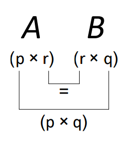

16. Matrices#
16.1. Matrix Definitions#
A matrix (plural: matrices) is essentially just an array of values, arranged in rows and columns. For example, when we were solving systems of linear equations by Gaussian elimination, we formed the augmented matrix of coefficients:
The vertical line was used to indicate that the matrix is partitioned into two sub-matrices, representing the coefficients and constant terms, respectively.
In general, the values contained in a matrix could represent anything, although manipulating systems of linear equations is one of the most valuable uses of matrices.
The Gaussian elimination technique that we have looked at is a brute force method for solving a given set of equations, whilst matrix methods are more concerned with finding general solutions and simplifications of certain types of problems.
16.1.1. Notation#
Two example matrices are given below
It is important that you do not use commas to separate the elements, which is incorrect notation.
Either square or round brackets can be used to denote a matrix - but you should avoid mixing notation. Other types of brackets cannot be used, so none of the expressions below are matrices. In fact, the third expression has a special meaning, as we will see later.
16.1.2. Terminology#
The matrix featured in (16.1) is referred to as a square matrix because it has the same number of rows and columns. We also can say that it is a (2x2) matrix, because it has two rows and two columns.
The number of rows must be given first:
\( \left( \begin{matrix} 1 & -3 & 5\\ 2 & -1 & 7\end{matrix} \right) \) is a (2 x 3) matrix, \( \left( \begin{matrix} 1 & -3 \\ 2 & -1 \\ 5 & 7\end{matrix} \right) \) is a (3 x 2) matrix.
This measurement is properly referred to as the order of a matrix, but is also often referred to as the size.
The individual values in a matrix are called elements, so in the matrix \( M = \left( \begin{matrix} 1 &2 &3 \\ 4& 5& 6\end{matrix} \right) \) we can say that the element in the \(2^{nd}\) row and \(3^{rd}\) column is the number 6. Subscripts can be used to refer to the elements, by writing \( M_{2,3} = 6\) for example.
The transpose of a matrix, written with a superscript letter T, means that we swap the rows and columns, as in the example given below:
\( M = \left( \begin{matrix} 1 &2 &3 \\ 4& 5& 6\end{matrix} \right) \Rightarrow M^T = \left( \begin{matrix} 1 & 4 \\ 2 & 5 \\ 3 & 6\end{matrix} \right)\)
In element notation, for any matrix \(X\), we can write that \(\left(X^T\right)_{i,j} = X_{j,i}\).
That is, the element in the \(i^{th}\) row and \(j^{th}\) column of \(X\) becomes the element in the \(j^{th}\) row and \(i^{th}\) column of \(X^T\).
The order of a matrix is reversed when it it transposed.
In a square matrix, two diagonals are called the main diagonal (top-left two bottom right), and the anti-diagonal (bottom-left to top-right). Square matrices for which \(A_{i,j}=A_{j,i}\) are called symmetric matrices.
An upper-triangular matrix is a square matrix in which the elements below the main diagonal are all zero, and a lower-triangular matrix is one where the elements above the main diagonal are all zero.
A diagonal matrix is one in which all of the elements are zero apart from those on the main diagonal. These type of matrices are very special, since they have “nice” properties for the purpose of matrix algebra.
Exercise 16.1
1. What is the order of each of the matrices shown?
\(A=\left(\begin{array}{cc}0 & -1 \\2 & 3 \\-1 & 0 \\\end{array}\right)\), \(b=\left(\begin{array}{c}1 \\2 \\3 \\\end{array}\right)\), \(c=0\).
2. Given the matrix \(X=\left(\begin{array}{ccc}-3 & 4 & 0 \\1 & 1 & 2 \\7 & -4 & 3 \\\end{array}\right)\), what element is represented by \((X^T)_{2,3}\) ?
3. Which of the following matrices is an upper-triangular matrix?
\(A=\left(\begin{array}{cccc}2&8&-1&0\\0&2&2&2\\0&0&1&-5\\0&0&0&3\end{array}\right)\), \(B=\left(\begin{array}{cccc}1&-2&5&2\\3&6&-2&0\\8&2&0&0\\-2&0&0&0\end{array}\right)\), \(C=\left(\begin{array}{ccc}6&0&0\\-3&-4&0\\2&7&7\end{array}\right)\).
16.2. Matrix algebra#
We will look at how real number algebra, such as addition and multiplication, can be extended to work with matrices. These are entirely human constructs, and you may be easily forgiven for asking why do we do it this way?
However, the best way to appreciate the practicalities is by tackling some problems, and so the definitions will first be introduced without much explanation. From a mathematical perspective, we simply note that the definitions must be consistent and well-determined (unambiguous).
16.2.1. Multiplication by a scalar#
Let \(\lambda\) be a scalar (a single number) and \(M\) be a matrix. Then \(\lambda M\) means that every element in matrix \(M\) is multiplied by \(\lambda\). This can be written in element notation as follows:
For example, \( -3\left( \begin{matrix} 0 & -2 \\ 1 & 5 \\ -1 & 3 \end{matrix} \right) = \left( \begin{matrix} 0 & 6 \\ -3 & -15 \\ 3 & -9 \end{matrix} \right) \).
16.2.2. Addition#
Let \(A\) and \(B\) be two matrices of the same order. Then,
The expression states that to add two matrices, we add together the corresponding elements. This type of operation on two matrices can be referred to as an element-wise operation.
For example, \( \left( \begin{matrix} 1 & -3 \\ 3 & 0 \\ 5 & -7 \end{matrix} \right) + \left( \begin{matrix} 0 & 6 \\ -3 & -15 \\ 3 & -9 \end{matrix} \right) = \left( \begin{matrix} 1 & 3 \\ 0 & -15 \\ 8 & -16 \end{matrix} \right) \).
The element-wise property means that only matrices of the same order can be added, and the expressions below are both meaningless:
Matrix addition can be combined with multiplication by a scalar to add multiples of one matrix to another.
For example, \( \left( \begin{matrix} 1 & -3 \\ 3 & 0 \\ 5 & -7 \end{matrix} \right) - 3\left( \begin{matrix} 0 & -2 \\ 1 & 5 \\ -1 & 3 \end{matrix} \right) = \left( \begin{matrix} 1 & 3 \\ 0 & -15 \\ 8 & -16 \end{matrix} \right) \).
Exercise 16.2
Given the matrices \(A=\left(\begin{array}{cc}1 & 2 \\-1 & 0 \\3 & 1 \\\end{array}\right)\), \(B=\left(\begin{array}{cc}-4 & 1 \\1 & 2 \\-2 & 3 \\\end{array}\right)\), \(C=\left(\begin{array}{cc}0 & 3 \\4 & 2 \\1 & 1 \\\end{array}\right)\), \(D=\left(\begin{array}{cc}5 & 1 \\3 & 2 \\\end{array}\right)\), what will be the result of the following expressions?
\(\left(A+B\right)+C\)
\((C+B)+A\)
\(A-2B+\frac{1}{2}C\)
\(A+D\)
16.2.3. Matrix multiplication#
To multiply two matrices together, their inner dimensions must be the same. That is, to calculate \( AB \), the number of columns in \(A\) must be the same as the number of rows in \(B\). The order of the product matrix is given by the outer dimensions of the two matrices. We can represent this result visually:

Matrix Multiplication
Given a \((p × r)\) matrix \(A\) and a \((r × q)\) matrix \(B\), the matrix product \(AB\) defines a \((p × q)\) matrix, whose elements are given by
To perform matrix multiplication, we must take elements in a row on the left hand side matrix and multiply with elements in a column on the right hand side matrix. The process is illustrate graphically here for a (2 x 2 ) example:

Exercise 16.3
Given that
\(A=\left(\begin{array}{ccc}3 & 1 & -2 \\0 & 2 & 4 \\\end{array}\right)\), \(B=\left(\begin{array}{cc}2 & 3 \\-3 & 0 \\1 & 1 \\\end{array}\right)\), \(C=\left(\begin{array}{cccc}1 & -8 & 2 & 11 \\0 & 4 & -3 & -7 \\6 & 1 & 8 & 1 \\\end{array}\right)\), \(D=\left(\begin{array}{ccc}1 & 2 & 3 \\1 & 1 & 1 \\2 & 0 & 1 \end{array}\right)\),
Calculate \(AB\) and \(BA\). Are these results the same?
Explain why the result \(A\left(\begin{array}{c}1\\2\end{array}\right)\) cannot be calculated.
What will be the order of the matrix \(A C\)?
Calculate the element in the second row and third column of \(AC\)
Calculate the result \(D^2\) (this question is a bit boring, but good practice!)
Example: Walk Lengths
Consider the connected graph below, in which the vertices have been numbered 1-4:

The graph can be represented by an adjacency matrix \(A\) in which element \(A_{i,j}\) is either 1 or 0 identifying if vertex \(i\) is or is not connected to vertex \(j\). For this graph we have:
It can be proved by induction that the result \(S^N\) tells us how many \(N\)-step paths there are between each pair of vertices (see inductive step outline below). Therefore, if we want the number of 3-step paths between each pair of vertices, we can compute
For instance, there are 5 walks of length 3 between vertices 1 and 2. Can you find them all?
Inductive step outline:
If \(S^{N-1}\) gives all walks of length \(N-1\) between pairs of vertices, then the following result gives the number of paths starting at node \(i\) and ending at vertex \(j\), obtained by taking one extra step from each connected vertex:
16.2.4. Properties of Matrix Multiplication#
Matrix multiplication is associative, that is
This can be proved by showing that the left and right hand sides are the same order, and that \((A(B C))_{i,j}=((A B)C)_{i,j}\).
Matrix multiplication is NOT commutative, that is
(although the \(AB\) and \(BA\) may be equal in some special cases).
Warning
For two matrices \(A\) and \(B\), in general \(AB \neq BA\).
Forgetting the matrix multiplication is non-commutative leads to disaster!
Example
Worked example illustrating non-commutative property
16.3. Solutions#
Solution to
1. \(A\) is a (3 x 2) matrix, since it has 3 rows and 2 columns. Matrices are nearly always given upper case letters as variable names.
\(b\) is a (3 x 1) matrix. Matrices with a single column are a special case, called a column vector.
\(c\) is a (1 x 1) matrix. In that case, we could dispense with the brackets, since it is equivalent to a scalar (basically just a single value).
2. The element in the second row and third column of the transpose matrix is the element in the third row and second column of the original matrix, so the result is -4.
3. The only upper-triangular matrix here is \(A\). Matrix \(B\) is an upper anti-triangular matrix and matrix \(C\) is a lower triangular matrix
Solution to
Matrix addition is both commutative and associative, because it is an elementwise operation and therefore has the same properties as addition of real numbers. Thus, the first two expressions give the same result:
1. and 2. \((A+B)+C=A+(B+C)=\left(\begin{array}{cc}1-4+0 & 2+1+3 \\-1+1+4 & 0+2+2 \\3-2+1 & 1+3+1 \\\end{array}\right)=\left(\begin{array}{cc}-3 & 6 \\4 & 4 \\2 & 5 \\\end{array}\right)\)
3. \(A-2 B+\frac{C}{2}=\left(\begin{array}{cc}1+8+0 & 2-2+\frac{3}{2} \\-1-2+2 & 0-4+1 \\3+4+\frac{1}{2} & 1-6+\frac{1}{2} \\\end{array}\right)=\left(\begin{array}{cc}9 & \frac{3}{2} \\-1 & -3 \\\frac{15}{2} & -\frac{9}{2} \\\end{array}\right)\)
4. Since \(A\) and \(D\) are not the same order, these two matrices cannot be added
Solution to
1.
We multiplied a (2x3) matrix with a (3x2) matrix. The result is a (2x2) matrix.
We multiplied a (3x2) matrix with a (2x3) matrix. The result is a (3x3) matrix.
The two results are not the same, and do not even have the same dimensions.
In general, \(A B\neq B A\), even when \(A\) and \(B\) are square matrices. That is, matrix multiplication is NOT COMMUTATIVE.
According to the definition \(A B_{i,j}= \sum _k A_{i,k} B_{k,j}\), whilst \(B A_{i,j}= \sum _k A_{k,j} B_{i,k}\). In the first case, the multiplied elements come from the \(i^{th}\) row of \(A\) and the \(j^{th}\) column of \(B\). In the second case, the multiplied elements come from the \(i^{th}\) row of \(B\) and the \(j^{th}\) column of \(A\)
2. The given result cannot be calculated because the inner dimensions do not match. That is, the number of columns in the left hand matrix does not match the number of rows in the right hand matrix.
3. Since \(A\) is (2x3) and \(C\) is (3x4), the result \(AC\) is (2x4). Notice that the result \(CA\) is impossible.
4. The element in the second row and third column is given by multiplying the second row of \(A\) and the third column of \(C\) to give \((0\times 2)+(2 \times -3)+(4 \times8)=26\).
5. \(\left(\begin{array}{ccc}9 & 4 & 8 \\4 & 3 & 5 \\4 & 4 & 7 \\\end{array}\right)\)
Solution to
The matrix \(A\) is already in reduced row echelon form, and \(x_1\) is a pivot variable and \(x_2\) a free variable.
There is one special solution corresponding to \(x_2=1\) and it is \(\begin{pmatrix}x_1\\x_2\end{pmatrix}=\begin{pmatrix}-1\\1\end{pmatrix}\)
The null space is the space of all vectors \(t\begin{pmatrix}-1\\1\end{pmatrix}, t \in \mathbb{R}\).
The general solution to \(Ax = b\) is \(x = t\begin{pmatrix}-1\\1\end{pmatrix} + \begin{pmatrix}5\\0\end{pmatrix}\) for \(t \in \mathbb{R}\) which is a straight line parallel to \(\begin{pmatrix}-1\\1\end{pmatrix}\) through the point \(\begin{pmatrix}5\\0\end{pmatrix}\).